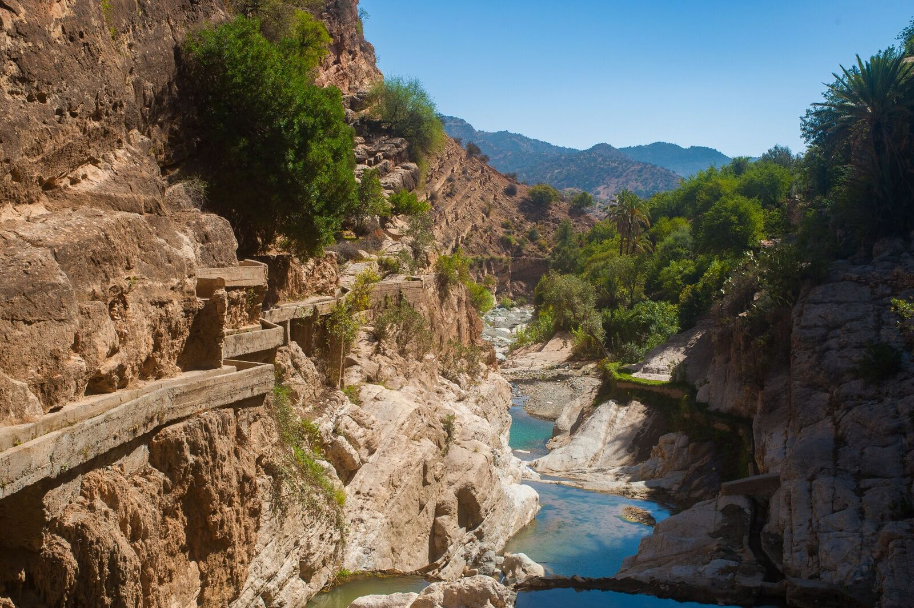

Si vous avez décidé de faire une randonnée a Skikda, vous etes au bon endroit. Dans cet article, nous allons vous donner toutes les informations dont vous avez besoin pour préparer votre voyage et profiter pleinement de votre expérience.
Quelle est la meilleure période pour randonnée a Skikda?
Cela dépend du type de temps que vous aimez. Le climat de Skikda est méditerranéen, avec des hivers doux et pluvieux et des étés chauds et ensoleillés. Si un peu de pluie ne vous dérange pas, l'hiver peut etre une période idéale pour la randonnée.
Les températures sont douces, et le paysage est luxuriant et vert. Cependant, si vous recherchez un ciel dégagé et un temps chaud, l'été est la meilleure période pour visiter. Les températures peuvenet etre assez élevées, alors, assurez-vous d'adoptez beaucoup d'eau et une protection solaire.
Découvrons ensembles les meilleures randonnés pour vous inspirer :
Montagnes de Kinouaa

Les montagnes de Kinouaa sont l'un des meilleurs endroits pour faire de la randonnée a Skikda. Les vues du sommet sont tout simplement époustouflantes, et les sentiers de randonnée sont bien balisés et parfaits pour tout niveau d'habileté.
Il y a également plusieurs terrains de camping disséminés dans les montagnes, vous pouvez donc facilement trouver un endroit ou planter votre tente et passer quelques nuits sous les étoiles.
Montagnes de Zemameria
Zemamria est l'un des meilleurs endroits pour faire de la randonnée a Skikda. Le sentier vous emmènene a travers une foret dense de chenes-lièges et de genévriers, avec une vue occasionnelle sur la mer Méditerranée.
Le sentier mène ensuite a une plage isolée, ou vous pouvez nager dans les eaux claires ou vous détendre au soleil. De la, le sentier continue jusqu'a une cascade voisine, ou vous pourrez vous rafraichir en faisant trempette.
Cette randonnée est difficile, mais gratifiante, et c'est un excellent moyen de découvrir la beauté naturelle de Skikda.
Montagnes de Oued Zehour
Oued Zehour est située a l'extreme ouest de Skikda, a la frontière de la wilaya de Jijel. La région est connue pour ses paysages magnifiques et ses belles plages.
Vous pouvez choisir parmi de nombreux sentiers différents, il y en a donc pour tous les gouts.
Que vous souhaitiez une randonnée difficile ou promenade tranquille, vous trouverez ce que vous cherchez a Oued Zehour. En plus d'etre un endroit idéal pour la randonée, la région offre également des vues imprenables sur la mer Méditerranée.